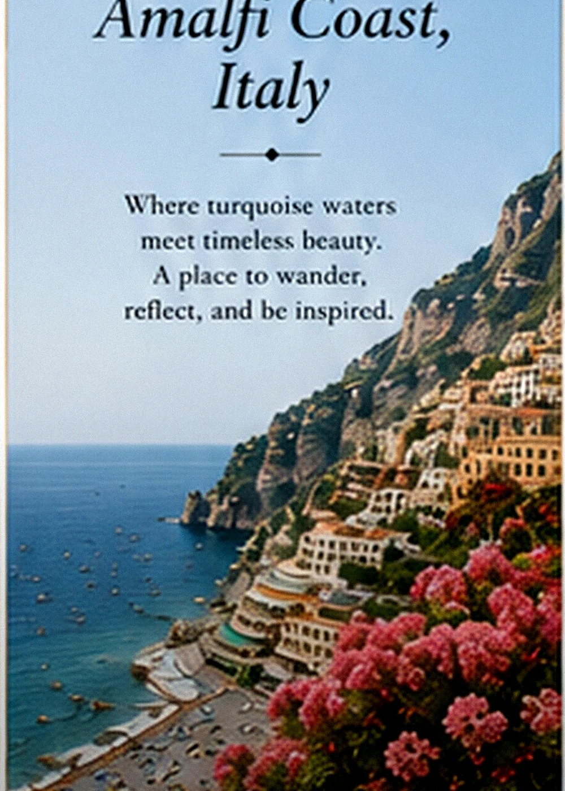

Curated Escapes
Thoughtful getaway concepts shaped around pace, atmosphere, meaning, and the experience you actually need.
Travel · Retreats · Experiences
Explore. Experience. Be inspired.
Begin the journeyThe experience
Off We Go is built around the belief that the world should not only be seen; it should be felt. Journeys are curated to create space for wonder, rest, cultural connection, family memory, and the kind of perspective that changes how you return home.
Tell us what you are envisioningHow this pillar lives
Thoughtful getaway concepts shaped around pace, atmosphere, meaning, and the experience you actually need.
Women’s trips, family adventures, celebrations abroad, and shared experiences designed for real connection.
Destination stories, visual guides, and practical ideas that make purposeful exploration feel possible.
Local discoveries, retreats, cultural moments, and beautiful pauses that do not require crossing an ocean.

“Go far enough to see the world differently, then come home able to see your own life differently too.”Designed By Lu

What guides the work
A new place can interrupt routine long enough for us to notice beauty, possibility, and ourselves again.
The best journeys are not measured by how much was checked off, but by what was truly experienced.
The stories created together become part of what families, friendships, and future selves carry forward.
Begin here
Bring the date, the room, the story, the question, the dream—or simply the feeling you want to create. The first step is a conversation.
Begin the journey